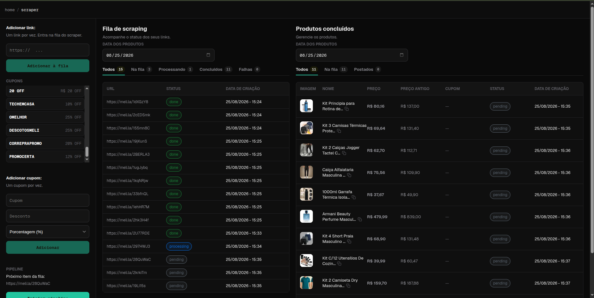
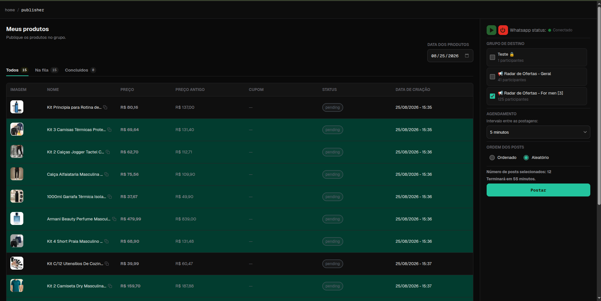
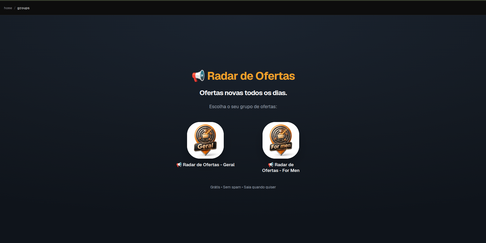
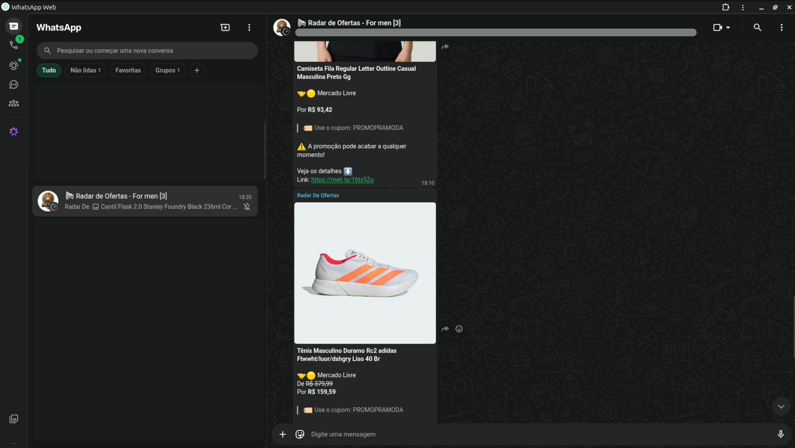
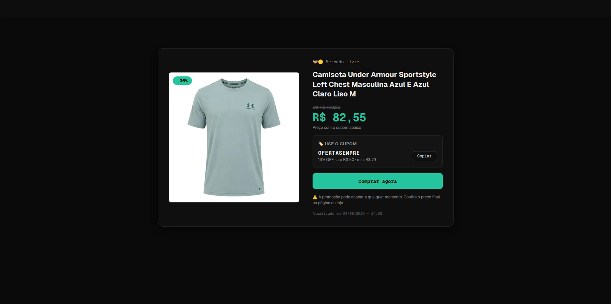

Projeto — Open source
Nandobot
Um sistema que coleta ofertas de e-commerce, organiza os produtos em uma fila e publica tudo automaticamente em grupos de WhatsApp. Feito para quem trabalha com marketing de afiliados e precisa postar dezenas de ofertas por dia sem fazer isso na mão.
Resumo
-
Papel
Fundador — Desenvolvimento e infraestrutura.
-
Stack
Typescript, NextJs, Python, Postgresql, Redis, Docker.
-
Status
Em produção, open source.
-
Início
Maio - 2026
O problema
Divulgar ofertas de afiliado é um trabalho repetitivo: encontrar o produto, copiar o link, conferir o preço antigo, montar a mensagem, escolher o grupo e postar — de novo, e de novo. Fazer isso manualmente limita quantas ofertas dá para divulgar por dia e torna o trabalho muito massante.
O Nandobot transforma esse fluxo em uma esteira: cola-se o link, o sistema extrai os dados do produto e cuida da publicação no ritmo certo.
Como funciona
-
Coleta
Os links entram em uma fila de scraping. Cada item passa pelos estados pending, processing e done, e o painel acompanha o progresso em tempo real — incluindo as falhas. O scraper extrai nome, imagem, preço atual e preço antigo do produto, e os cupons cadastrados ficam disponíveis para serem aplicados na oferta.

Fila de scraping e produtos concluídos, com os cupons e o próximo item da pipeline à esquerda. -
Publicação
Com os produtos prontos, escolhe-se o grupo de destino, o intervalo entre as postagens e a ordem — sequencial ou aleatória. O painel calcula quanto tempo a fila vai levar antes de começar e mostra o status da conexão com o WhatsApp.

Agendamento das postagens: grupo de destino, intervalo, ordem e a previsão de término da fila. -
Distribuição
As ofertas chegam aos grupos, e uma landing page pública recebe quem quer entrar. Os grupos são segmentados por público, então o visitante escolhe o que faz sentido para ele em vez de receber tudo.

Página de entrada dos grupos, aberta ao público. -
Grupo
Tudo é postado de acordo com o programado pelo afiliado, o sistema é bastante robusto e muito eficiente.

Grupo no Whatsapp mostrando as ofertas postadas de forma programática. -
Página do produto
É possivel também compartilhar a página do produto diretamente nas redes sociais.

Página de produto informando características importantes sobre o produto que esta sendo vendido.
Decisões técnicas
-
Usar Baileys como API para envio de mensagens no Whatsapp.
Isso foi implementado depois de tentar 3 formas diferentes de conexão com o Whatsapp. Foi usado a Evolution Go, Evolution API e o modulo whatsapp-web.js. Nenhum deles supriu a necessidade de forma simples e consistente. Havia bugs e impedimentos para implementa-los. O principal motivo de deixar de usa-los foi: A infraestrutura complexa para algo simples. O Baileys se encaixou muito bem a necessidade, não precisando alterar nada na infraestrutura e sendo uma dependência simples, sem ficar à mercê de outras APIs de terceiros.
-
Usar o Redis.
Surgiu a necessidade de usar Redis para armazenar a sessão do Whatsapp que tem muito I/O de dados. O Redis, rodando localmente dentro do servidor foi uma solução muito confiável e veloz. O Redis também é usado como fila para os produtos que hão de ser postados, pois armazenar uma fila que fica muitas horas até ser concluída poderia ser uma inconsistencia, caso fosse feita em memória diretamente no servidor Web. Isso porque o Redis tem um sistema de manter os dados vivos, mesmo com uma queda do serviço.
-
WebSocket para a transmissão do QR code na conexão com o Whatsapp.
De primeiro momento, pode parecer 'overengineering' usar WebSocket apenas para enviar o QRcode do Whatsapp de um lado para o outro. Mas não é. O WebSocket é um protocolo muito simples, que serviu perfeitamente para evitar 'gambiarras' no momento de fazer a conexão com o Whatsapp. O WebSocket nesse caso simplesmente repassa as mensagens que o servidor do Whatsapp envia para o servidor, e então o servidor repassa para o cliente (navegador/frontend) em tempo real, sem armazenar estado nem fazer várias requisições HTTP checando se o QRcode mudou ou expirou.
-
Github Actions para DevOps.
O Github Actions é essencial para a implantação deste projeto, pois o deploy de novas versões do código é completamente coberta pelas pipelines do Actions, o que permite que em poucos minutos um deploy de uma versão atualizada da aplicação chegue ao servidor.
-
Testes automatizados.
Eles são muito necessários para tentar fazer com que a aplicação mantenha ao máximo a sua consistência. O código é refatorado e mudado o tempo todo. Sem os testes o desenvolvimento seria como andar num quarto desconhecido no escuro.
Aprendizados
Esse projeto foi muito importante para eu me aperfeiçoar no DevOps, pois tudo o que se refere a infraestrutura, CI/CD, configurar um servidor, configurar nginx e testes automatizados foi feito a mão, com a ajuda das pesquisas em sites como o StackOverFlow e com a ajuda do Claude Code, para fazer tarefas massantes ou repetitivas.
Me aperfeiçoei também no SQL, que foi utilizado de forma pura, sem ORMs para auxiliar, e essa era justamente a ideia. Gosto de me desafiar!